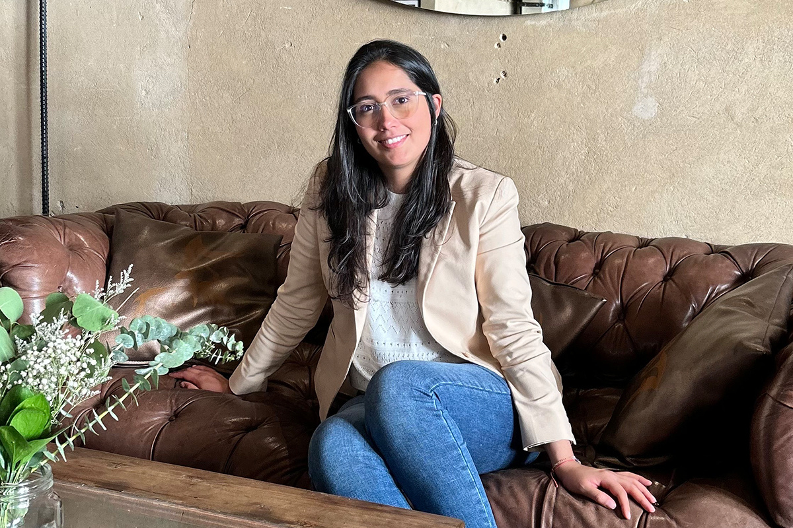

Una mirada al Trabajo Remoto desde HR
¿Cuál es la diferencia?
¿Cuál es la diferencia?

¿Se han preguntado alguna vez cuál es la diferencia de solo ser beneficiario al de ser parte de la generación de esos beneficios?
Para esto vamos a hablar con Tati, una de nuestras queridas personas que conforma el equipo de Recursos Humanos de Compara.
Como ya hemos hablado en post anteriores, Compara es una empresa 100% remota y tuvimos la experiencia de Elisa que nos contó (desde Portugal), como se vive en esta cultura. Pero ahora queremos saber y también contarles como se ve desde adentro.
El relato de Tati, comienza así:
Hoy en día, después de la pandemia, son cada vez más las personas que anuncian en LinkedIn estar buscando empleo de forma 100% remoto. Sin embargo, la gran mayoría de las empresas, optaron por volver a la presencialidad o manejar modalidades de trabajo híbrido. Por lo que encontrar un lugar que ofrezca esta posibilidad no es tan sencillo como podríamos pensar.
Es decir, todos se subieron a la ola del trabajo remoto, pero se bajaron al tiempo. En Compara no fue así.
En el 2021, en Compara decidimos adoptar una cultura de trabajo 100% remoto, respondiendo a las necesidades de nuestros equipos y a la evolución del mercado laboral. Entendimos que es complemente posible ser productivos y eficientes desde la virtualidad. Es por lo que, para nuestros comparadores, trabajar bajo esta modalidad se ha convertido en el beneficio más valorado. A su vez, es un pilar fundamental para propiciar una cultura flexible, donde cada persona puede equilibrar su vida personal y laboral, evitando tardar tiempos extensos para movilizarse desde sus casas a un lugar físico de trabajo, y logrando estar más cerca de sus familias y mascotas.
Totalmente, amamos estar cerca de nuestras familias y mascotas. A su vez, presenta una serie de desafíos para nuestro equipo de HR. Generar relaciones entre los miembros de Compara más allá de las reuniones de trabajo, ¿es posible?
Son mayores los esfuerzos que debemos hacer para crear conexiones genuinas en la virtualidad, siendo que la mayoría de encuentros se centran en temas laborales. En un entorno presencial, construir amistades es más natural y sencillo, pero en remoto debemos propiciar espacios y diseñar estrategias que permitan que se den estas conexiones. Por eso, esta modalidad de trabajo requiere ir acompañada de un trabajo cultural sólido, donde todos rememos en la misma dirección para trabajar felices.
Seguramente en estos momentos se están preguntando, ¿cómo se logra esto?, ¿podemos ser como ustedes? Por supuesto que se lo preguntamos también y antes de contarles la respuesta, les avisamos que es un gran trabajo el migrar y lograr esta cultura, así que agradecemos a todas las personas que estuvieron detrás de esto.
Retos como este, donde se brinde herramientas adecuadas para que cada persona cuente con un set up de trabajo ideal. Establecer un manual de trabajo remoto donde los comparadores cuenten con una guía de buenas prácticas en la virtualidad y pensar diferente para diseñar iniciativas de bienestar que promuevan un sentido de pertenencia y camaradería a pesar de la distancia, hace parte de los múltiples desafíos que enfrentamos desde HR para vivir una modalidad de trabajo remoto.
Sí, tenemos un manual de trabajo remoto y sirve muchísimo. Pero entonces, ¿es bacán esta elección?, ¿hay mayores beneficios?
Son mayores los esfuerzos que debemos hacer para crear conexiones genuinas en la virtualidad, siendo que la mayoría de encuentros se centran en temas laborales. En un entorno presencial, construir amistades es más natural y sencillo, pero en remoto debemos propiciar espacios y diseñar estrategias que permitan que se den estas conexiones. Por eso, esta modalidad de trabajo requiere ir acompañada de un trabajo cultural sólido, donde todos rememos en la misma dirección para trabajar felices.

Ahora que tenemos la mirada desde HR, podemos afirmar que la modalidad remota es grandiosa, tiene sus desafíos, pero con el gran equipo que hay detrás de esto, todo es posible.
Gracias Tati por compartirnos tu experiencia y hacernos saber la otra cara del trabajo 100% remoto.
 Actualidad
ActualidadEl recordado programa noventero “Venga Conmigo” marcó a toda una generación en Chile. Su exitoso segmento “Corazones Service” se transformó…
 Actualidad
ActualidadHace aproximadamente 2 meses comenzamos con el cierre de lo que empezó en julio como el “Compariniverse”.
 Actualidad
ActualidadHace unos meses lanzamos Compariniverse: la primera campaña en Chile protagonizada por una celebridad completamente clonada con IA.